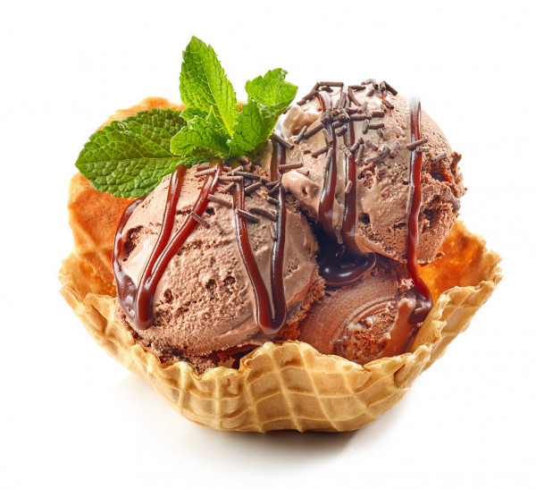
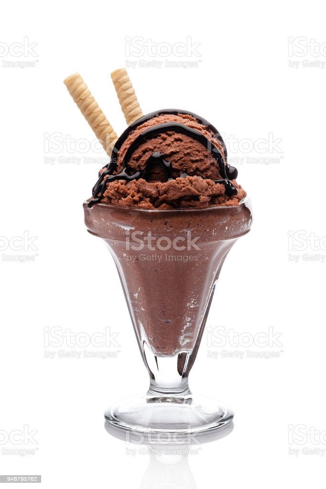
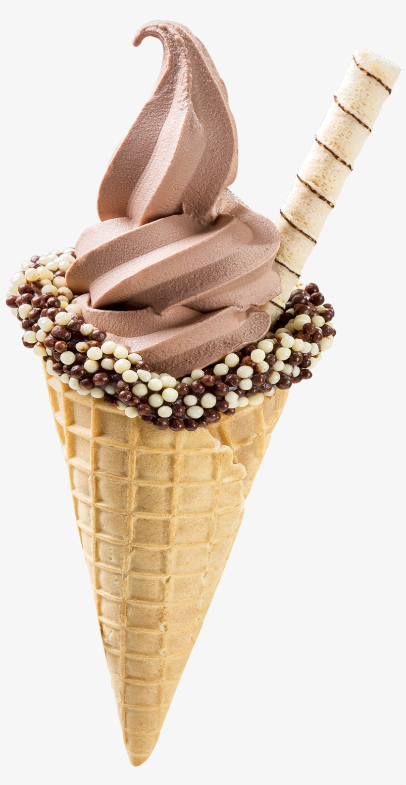

Home
Home
O chocolate é um alimento derivado da amêndoa fermentada e torrada do cacau. Consumido no mundo inteiro, é importante componente da indústria alimentícia, além de ter papel fundamental na economia de vários países do globo. Sua árvore é o cacaueiro, planta típica de clima tropical, que encontra no Brasil um ambiente ideal para o seu cultivo, em especial nas regiões do Espírito Santo e o sul da Bahia, em Ilhéus. O Brasil é o maior produtor de chocolate da América Latina e um dos maiores do mundo ao lado da Costa do Marfim, Gana e Equador. Segundo cientistas, o lar original do cacau ficava nas florestas da região do rio Amazonas, ou na região do Orinoco, na Venezuela. Colombo teve a oportunidade de, durante sua quarta viagem à América, conhecer os grãos de cacau, mas não lhes deu atenção.
Os relatos dão conta de que os primeiros a consumir chocolate regularmente, por volta de 1500 a.C. foram os membros da civilização Olmeca, habitantes dos atuais México e Guatemala. Posteriormente, Maias e Astecas povos da mesma área, desenvolvem o costume de beber chocolate, produto considerado sagrado. As sementes eram torradas e misturadas a iguarias como por exemplo pimenta, uma base de milho fermentado e especiarias, resultando em um sabor bem diferente do que se conhece hoje. Nas cerimônias religiosas, o cacau torrado era servido com especiarias e mel.
É por meio do comércio realizado pelos conquistadores espanhóis que o chocolate chega à Europa, acabando por se difundir pelo mundo todo. No início, é considerado um alimento especial por seu valor nutricional e energético e somente mulheres, sacerdotes e nobres o consumiam em cultos da Igreja Católica. Por volta de 1700 as "Casas de Chocolate" começaram a competir com as "Casas de Café" em Londres.
Fonte:Chocolate
Produto |
Valor |
Quantidade |
|  | R$15,00 | |
|  | R$25,00 | |
|  | R$5,00 | |

|
R$3,00 | |